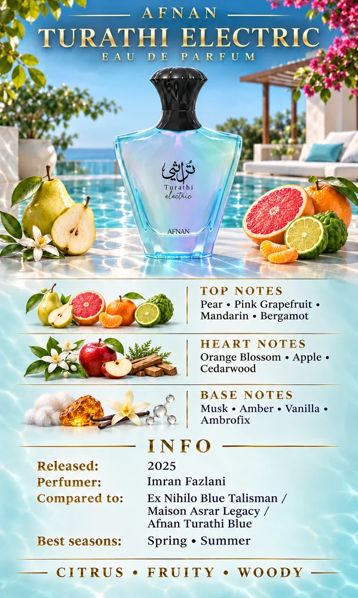

Afnan
Turathi Electric Eau de Parfum
γ Gamma Inspired by · Eau de Parfum · 2025 Future buy
Randy's rating—/10
Public rating8/10
Overall R—/21
Normalized N—
R and N are left blank until Randy has worn and rated it. How scores work
Notes
Top notes
- pear
- pink grapefruit
- mandarin
- bergamot
Heart notes
- orange blossom
- apple
- cedarwood
Base notes
- musk
- amber
- vanilla
- Ambrofix
Details
| House | Afnan |
|---|---|
| Type | Inspired by · γ Gamma |
| Concentration | Eau de Parfum |
| Released | 2025 |
| Perfumer | Imran Fazlani |
| Scent family | Citrus, Fruity, Musky & Powdery |
| Best seasons | Spring, Summer |
| Inspired by | Ex Nihilo Blue Talisman |
| Similar to | Ex Nihilo Blue Talisman Maison Asrar Legacy Afnan Turathi Blue |
Sources
Fragrantica 4.04/5 (about 8.1/10) from 2,005 votes; Parfumo 7.6/10 from 354 ratings (longevity 6.8, sillage 6.6). Vote-weighted and rounded to 8. Checked 2026-11-14.